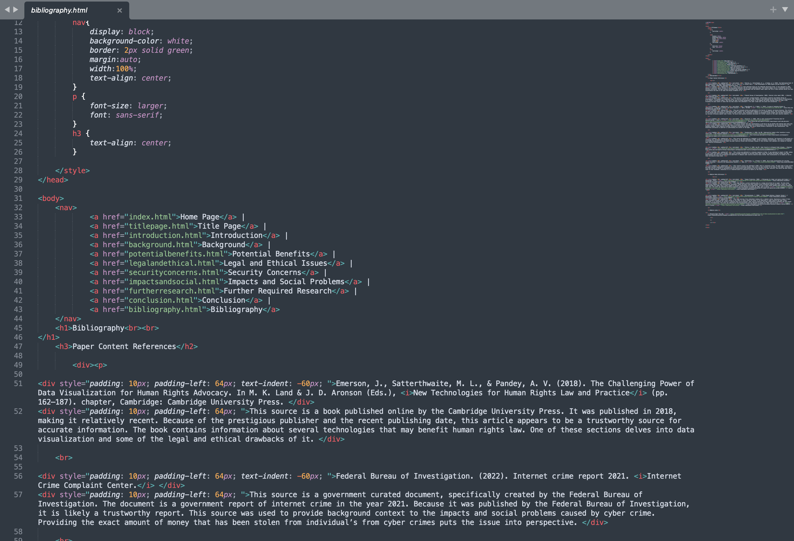
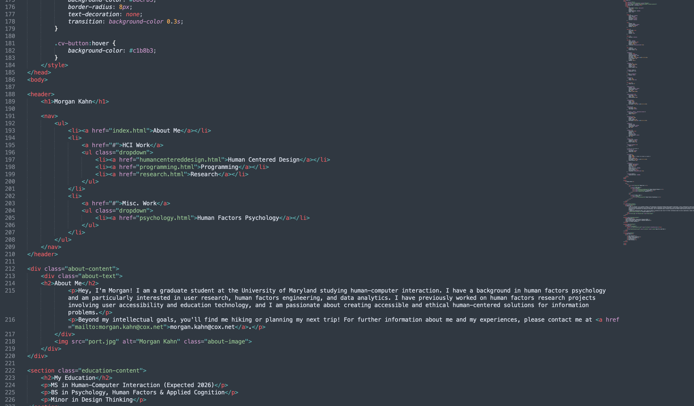

As part of my technical coursework, I was assigned to take a research paper from earlier in the semester and arrange it into a website format. Each webpage had to fit various specifications set by the instructor, which included a title page with the George Mason University honor code, four to six content pages, a bibliography, a navigational menu, at least one digital image, and a table.
The website is linked below, as well as a sample of the programming from one of the web pages.
I created this portfolio website from scratch. Below is a sample of the programming for the 'About Me' page.
